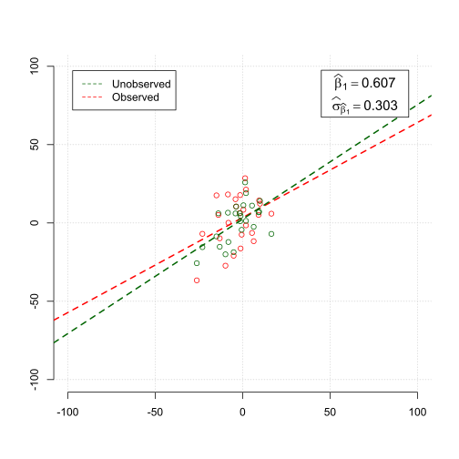
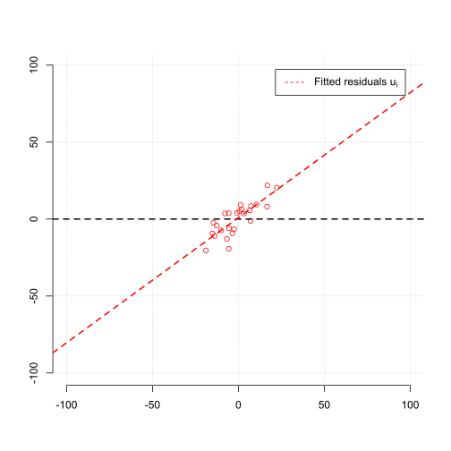
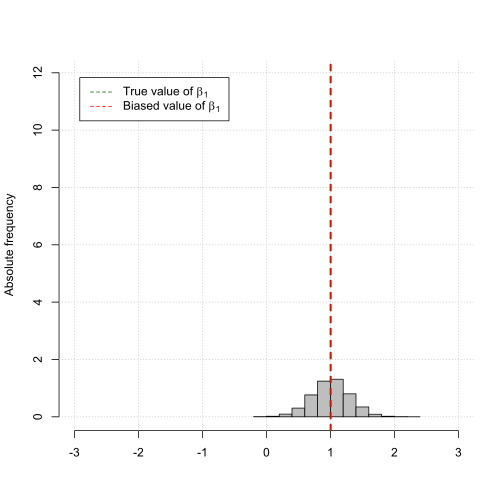
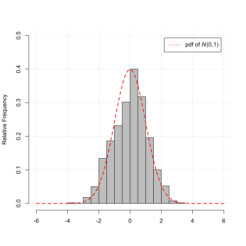

Econometrics and Statistics (520K)
Econometrics and Statistics (520K)
Properties of the OLS Estimator
Effect of Omitted Variable Bias (OVB)
Motivation
Understand the effect of omitted variable bias (OVB) on the sampling distribution of the OLS estimator.
Observable and Unobservable Statistical Model
Suppose we are interested in the relationship between the variable \(Y\) and \(X_{1}\).
However, suppose the variable \(Y\) is determined by an additional unobservable variable \(X_{2}\).
To estimate the relationship between \(Y\) and \(X_{1}\) we estimate the following observable linear regression model,
$$ \begin{align} Y_i = \widetilde{\beta}_{0} + \widetilde{\beta}_{1} X_{i} + \widetilde{u}_{i}. \end{align} $$However, the unobservable relationship is given by,
$$ \begin{align} Y_{i} = \beta_{0} + \beta_{1} X_{1i} + \beta_{2} X_{2i} + u_{i}. \end{align} $$Note, if the effect of \(X_{2}\) is known, the unobservable relationship can be also written as,
$$ \begin{align} \left(Y_{i} - \beta_{2} X_{2i}\right) &= \beta_{0} + \beta_{1} \left(X_{1i} - \beta_{2} X_{2i}\right) + u_{i} \\ Y_{i}^{adj} &= \beta_{0} + \beta_{1} X_{1i}^{adj} + u_{i}, \end{align} $$where \(Y_{i}^{adj} = \left(Y_{i} - \beta_{2} X_{2i}\right)\) and \(X_{1i}^{adj} = \left(X_{1i} - \beta_{2} X_{2i}\right)\) are the variables adjusted for the effect of \(X_{2}\).
Furthermore, the unobserved component \(\widetilde{u}_{i}\) of the observable regression model can be written as,
$$ \begin{align} \widetilde{u}_{i} = \beta_{2} X_{2i} + u_{i}. \end{align} $$Finally, \(X_{1i}\), \(X_{2i}\) and \(u_{i}\) are generated by i.i.d. draws from the following distributions
$$ \begin{align} \left(\begin{array}{c} X_{1i} \\ X_{2i} \end{array}\right) \sim N\left( \begin{matrix} 0 \\ 0 \end{matrix} \; \begin{matrix} \phantom{,} \\ , \end{matrix} \;\;\; \begin{matrix} \sigma_{X_{1}}^{2} & \rho_{X_{1}X_{2}}\sigma_{X_{1}}\sigma_{X_{2}} \\ \rho_{X_{1}X_{2}}\sigma_{X_{1}}\sigma_{X_{2}} & \sigma_{X_{2}}^{2} \end{matrix}\right), \;\;\;\;\; u_{i} \sim N\left(0, \sigma_{u}^{2}\right). \end{align} $$Conditions for and Effects of Omitted Variable Bias
Omitted variable bias (OVB) occurs when the following two conditions are true:
The effect of omitted variable bias (OVB) can be quantified as,
$$ \begin{align} \widehat{\beta}_{1} &\overset{p}{\rightarrow} \beta_{1} + \beta_{2} \rho_{X_{1}X_{2}} \frac{\sigma_{X_{2}}}{\sigma_{X_{1}}}. \end{align} $$Check the details about the effects of OVB below.
Illustration
Change the parameters and see the effect on the properties of the OLS estimator \(\widehat{\beta}_{1}\) as estimator for \(\beta_{1}\).
Parameters
Sample size
Effect of \(X_{1}\)
Effect of \(X_{2}\)
Correlation of \(X_{1}\) & \(X_{2}\)
Scatter plot (observations)
The green fitted regression line based on the regression of,
$$ \begin{align} Y_{i}^{adj} \;\;\;\;\; \text{on} \;\;\;\;\; X_{1i}^{adj}, \end{align} $$represents the unobservable relationship.
The red fitted regression line based on the regression of,
$$ \begin{align} Y_{i} \;\;\;\;\; \text{on} \;\;\;\;\; X_{1i}, \end{align} $$represents the observable relationship.
The scatter plots and the fitted regression line represent the result for only one simulation. The shaded area illustrate the range of all fitted regression lines across all simulation outcomoes.
Scatter plot (fitted unobserved residuals)
The fitted residuals of the unobservable model are constructed such as,
$$ \begin{align} \widehat{u}_{i} = \widehat{\widetilde{u}}_{i} - \beta_{2} X_{2i}, \end{align} $$The relationship between \(\widehat{\widetilde{u}}_{i}\) and \(X_{1}\) is illustrated by the fitted regression line of,
$$ \begin{align} \widehat{u}_{i} \;\;\;\;\; \text{on} \;\;\;\;\; X_{1i}. \end{align} $$The scatter plots and the fitted line illustrate the result for only one simulation. The shaded area illustrate the range for all simulation outcomoes.
Histogram of the sample average \(\widehat{\beta}_{1}\)
As the sample size \(N\) grows the OLS estimator \(\widehat{\beta}_{1}\) gets closer to,
i.e., the OLS estimator is biased if \(\beta_{2} \neq 0\) or \(\rho_{X_{1}X_{2}} \neq 0\).
Histogram of the standardized OLS estimator \(z_{\widehat{\beta}_{1}}\)
In the case of omitted variable bias (OVB),
$$ \begin{align} z_{\widehat{\beta}_{1}} &= \frac{\widehat{\beta}_{1} - \beta_{\beta_{1}}}{\sigma_{\widehat{\beta}_{1}}}, \end{align} $$does not get closer to the standard normal distribution \(N\left(0, 1\right)\).
More Details
Suppose we are interested in the relationship between individual earnings \(\left(Y\right)\) and years of education \(\left(X_{1}\right)\).
However, suppose individual earnings \(\left(Y\right)\) is additional determined by individual ability \(\left(X_{2}\right)\) which is unobservable variable, or, hard to measure by the econometrician.
The OLS estimator of regressing individual earnings on years of eduction is biased if,
Under the assumptions that \(\left(X_{1i}, Y_{i}\right)\), \(i = 1,2,...,n\), are i.i.d. and \(X_{1i}\) and \(Y_{i}\) have nonzero finite fourth moment and assuming the omitted variable is centered, i.e., has mean equals zero, it applies,
$$ \begin{align} \sum_{i=1}^{n}\left(X_{1i}-\overline{X}_{1}\right)^{2} &\overset{p}{\rightarrow} \sigma_{X_{1}}^{2} \\ \sum_{i=1}^{n}\left(X_{1i}-\overline{X}_{1}\right)X_{2i} &\overset{p}{\rightarrow} \text{Cov}\left(X_{1i}, X_{2i}\right) = \rho_{X_{1}X_{2}}\sigma_{X_{1}}\sigma_{X_{2}} \end{align} $$Thus, it applies,
$$ \begin{align} \widehat{\beta}_{1} &\overset{p}{\rightarrow} \beta_{1} + \beta_{2} \rho_{X_{1}X_{2}} \frac{\sigma_{X_{2}}}{\sigma_{X_{1}}}. \end{align} $$Remember, due to the different outcomes of the samples the OLS estimates will vary across sample draws.